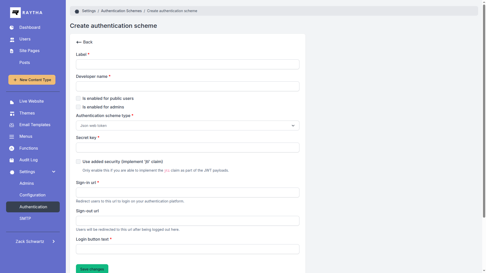

Let your own application sign people in to Raytha by handing it a signed JSON Web Token.
The admin shows a live setup guide next to the JWT scheme editor, with copyable URLs built from your Website URL and the scheme's developer name. This page covers the same ground.
https://yoursite.com/account/login/sso/{developer_name}https://yoursite.com/raytha/login/sso/{developer_name}?returnUrl=/a/local/path. The users link only works when the scheme is enabled for users (otherwise it redirects home); the admin link only when it is enabled for admins (otherwise 401).
raytha_callback_url. It is the token callback for that audience, with returnUrl attached when there is one.raytha_callback_url is on your Raytha site, appends token=<jwt> (keeping the query string already on it), and redirects there:
https://yoursite.com/account/login/jwt/{developer_name}https://yoursite.com/raytha/login/jwt/{developer_name}returnUrl when that is a local path, otherwise to the home page (users) or the admin dashboard (admins).Your application can skip the first two steps and send people straight to a token callback URL with a token.

| Setting | Description |
|---|---|
| Label | Names the scheme in the admin list and on the admin sign-in page (Continue with …). Required. |
| Developer name | Part of every sign-in URL. Lowercased, and every character other than a letter or digit becomes _. Cannot be changed after creation. |
| Login button text | The label of the scheme's button on the public login page. Required. |
| Sign in URL | Your application's sign-in page. Raytha appends raytha_callback_url and keeps any query string already on it. Required. |
| Sign out URL | Optional. Raytha never calls it or redirects to it: signing out of Raytha ends only the Raytha session. Site templates can read it from CurrentOrganization.AuthenticationSchemes to link to your sign-out page. |
| Enabled for users / admins | Who may sign in, by account type. Admin accounts need Enabled for admins; everyone else needs Enabled for users. This applies on either callback URL; the URL only decides where people land. |
| JWT secret | The shared HMAC secret. Use at least 32 random ASCII characters. Required. |
| JWT high security | Requires a jti claim and accepts each jti once. |
| Claim | Required | What Raytha does with it |
|---|---|---|
email |
Required | Must be a valid address. Finds the account when sub doesn't, and becomes the account's email on every sign-in. |
exp |
Required | Expiry in seconds since the epoch. Raytha allows no clock skew. A token without exp is rejected. |
sub |
Recommended | Your stable user id. Raytha matches on it first, within this scheme, so a changed email doesn't create a second account. |
given_name |
Optional | First name. New accounts without it are named SsoVisitor. |
family_name |
Optional | Last name. New accounts without it get a random last name. |
groups |
Optional | A string or an array of user group developer names. See Accounts and Groups. |
jti |
High security | Unique token id. Required and single-use when high security is on, ignored otherwise. |
nbf |
Optional | Not before. Enforced with no clock skew. |
iss, aud, iat |
Ignored | Raytha does not validate issuer or audience. |
{
"sub": "8f14e45f-ceea-467a-9575-7e1d5f2e0c5b",
"email": "ada@example.com",
"given_name": "Ada",
"family_name": "Lovelace",
"groups": ["editors"],
"jti": "0d8c3a4e-9a51-4c43-8f7e-6f1b2f0a7c11",
"exp": 1790000120
}?.raytha_callback_url arrives in a query string, so anyone can change it. Only redirect to your Raytha origin, or a crafted link hands a valid token to someone else. Each example checks this.// npm install jsonwebtoken
const crypto = require("node:crypto");
const jwt = require("jsonwebtoken");
const RAYTHA_ORIGIN = "https://yoursite.com";
function raythaRedirectUrl(callbackUrl, user) {
const url = new URL(callbackUrl);
if (url.origin !== RAYTHA_ORIGIN) {
throw new Error("raytha_callback_url is not on the Raytha site");
}
const token = jwt.sign(
{
sub: user.id,
email: user.email,
given_name: user.firstName,
family_name: user.lastName,
jti: crypto.randomUUID(),
},
process.env.RAYTHA_JWT_SECRET,
{ algorithm: "HS256", expiresIn: "2m" },
);
url.searchParams.set("token", token);
return url.toString();
}
// res.redirect(raythaRedirectUrl(req.query.raytha_callback_url, currentUser));// dotnet add package System.IdentityModel.Tokens.Jwt
using System.IdentityModel.Tokens.Jwt;
using System.Security.Claims;
using System.Text;
using Microsoft.IdentityModel.Tokens;
public static class RaythaSignIn
{
const string RaythaOrigin = "https://yoursite.com";
public static string RedirectUrl(string callbackUrl, string userId, string email, string firstName, string lastName)
{
var callback = new Uri(callbackUrl);
if (callback.GetLeftPart(UriPartial.Authority) != RaythaOrigin)
throw new InvalidOperationException("raytha_callback_url is not on the Raytha site");
var secret = Environment.GetEnvironmentVariable("RAYTHA_JWT_SECRET")!;
var key = new SymmetricSecurityKey(Encoding.ASCII.GetBytes(secret.PadRight(32, '\0')));
var token = new JwtSecurityToken(
claims: new[]
{
new Claim(JwtRegisteredClaimNames.Sub, userId),
new Claim(JwtRegisteredClaimNames.Email, email),
new Claim(JwtRegisteredClaimNames.GivenName, firstName),
new Claim(JwtRegisteredClaimNames.FamilyName, lastName),
new Claim(JwtRegisteredClaimNames.Jti, Guid.NewGuid().ToString()),
},
expires: DateTime.UtcNow.AddMinutes(2),
signingCredentials: new SigningCredentials(key, SecurityAlgorithms.HmacSha256));
var jwt = new JwtSecurityTokenHandler().WriteToken(token);
var separator = string.IsNullOrEmpty(callback.Query) ? "?" : "&";
return callbackUrl + separator + "token=" + Uri.EscapeDataString(jwt);
}
}# pip install pyjwt
import os
import time
import uuid
from urllib.parse import parse_qsl, urlencode, urlsplit, urlunsplit
import jwt
RAYTHA_ORIGIN = "https://yoursite.com"
def raytha_redirect_url(callback_url, user):
parts = urlsplit(callback_url)
if f"{parts.scheme}://{parts.netloc}" != RAYTHA_ORIGIN:
raise ValueError("raytha_callback_url is not on the Raytha site")
now = int(time.time())
token = jwt.encode(
{
"sub": user["id"],
"email": user["email"],
"given_name": user["first_name"],
"family_name": user["last_name"],
"jti": str(uuid.uuid4()),
"exp": now + 120,
},
os.environ["RAYTHA_JWT_SECRET"],
algorithm="HS256",
)
query = parse_qsl(parts.query) + [("token", token)]
return urlunsplit(parts._replace(query=urlencode(query)))jti claim.jti and refuses it from then on, so a token works exactly once.sub within this scheme first, then by email across all accounts. An existing account with the same email, including a password account, is linked to this scheme.groups values are matched against user group developer names, exactly. When at least one matches, the account's groups become exactly the matched set. When none match or the claim is missing, groups are left alone.AUTH_RATE_LIMIT_PER_MINUTE (default 30).Public users see the message below on the site's 403 page. The admin callback shows a bare 403; send the same token to the users callback to read the reason, since the checks are identical.
| Message | Cause |
|---|---|
| Security token has expired. | exp had passed. Raytha allows no clock skew: keep both clocks on NTP and give tokens a couple of minutes. |
| Invalid security token. | Wrong secret, a non-HMAC algorithm, HS384 or HS512 with a short secret, no exp, an nbf in the future, or a token mangled in transit. |
| 'email' is missing from security token 'email' is not a valid email address |
Send an email claim holding one valid address. |
| JWT high security enabled: 'jti' attribute is required in security token. | High security is on and the token has no jti. |
| Security token already consumed: … | That jti was used before. Mint a new token for every sign-in. |
| Authentication scheme disabled for administrators. / … for public users. | The account's type isn't enabled on this scheme. |
| User has been deactivated. | Reactivate the account in Raytha. |
| Authentication scheme is disabled | Neither Enabled for users nor Enabled for admins is on. |